|
3-5-2
|
Czechia | 1 | - | 1 | South Africa |
4-3-3
|
| HT 1-0 | ||||||
|
FIFA World CupThursday 18 June 2026
|
||||||
- Venue
- Atlanta Stadium
- Attendance
- 67,442
- Referee
- Mary Victoria Penso
Goal6'
M. Sadílek
Assist: A. Sojka
- 2
Substitution55'
V. Darida
P. Šulc
A. Sojka
J. Zelený
- 2
Substitution67'
M. Sadílek
T. Souček
A. Hložek
L. Provod
Yellow card75'
L. Krejčí
Substitution78'
L. Červ
D. Zima
Whistle45+5'
45+5'
Yellow card33'
T. Mokoena
Yellow card40'
T. Mbatha
Substitution46'
J. Adams
R. Mofokeng
Substitution66'
I. Rayners
E. Makgopa
Penalty scored83'
T. Mokoena
Substitution84'
T. Maseko
K. Sebelebele
Czechia | |
|---|---|
Goalkeeper | |
| 1 | M. Kovář |
Defender | |
| 3 | T. Holeš |
| 4 | R. Hranáč |
| 7 | L. Krejčí 75' |
Midfielder | |
| 5 | V. Coufal |
| 8 | V. Darida 55' |
| 12 | L. Červ 78' |
| 18 | M. Sadílek 6'67' |
| 24 | A. Sojka 55' |
Forward | |
| 9 | A. Hložek 67' |
| 10 | P. Schick |
Substitutes | |
| 2 | D. Zima 78' |
| 15 | P. Šulc 55' |
| 17 | L. Provod 67' |
| 20 | J. Zelený 55' |
| 22 | T. Souček 67' |
South Africa | |
Goalkeeper | |
| 1 | R. Williams |
Defender | |
| 6 | A. Modiba |
| 14 | M. Mbokazi |
| 20 | K. Mudau |
| 21 | I. Okon |
Midfielder | |
| 4 | T. Mokoena 33'83' |
| 5 | T. Mbatha 40' |
| 23 | J. Adams 46' |
Forward | |
| 7 | O. Appollis |
| 12 | T. Maseko 84' |
| 15 | I. Rayners 66' |
Substitutes | |
| 10 | R. Mofokeng 46' |
| 17 | E. Makgopa 66' |
| 25 | K. Sebelebele 84' |


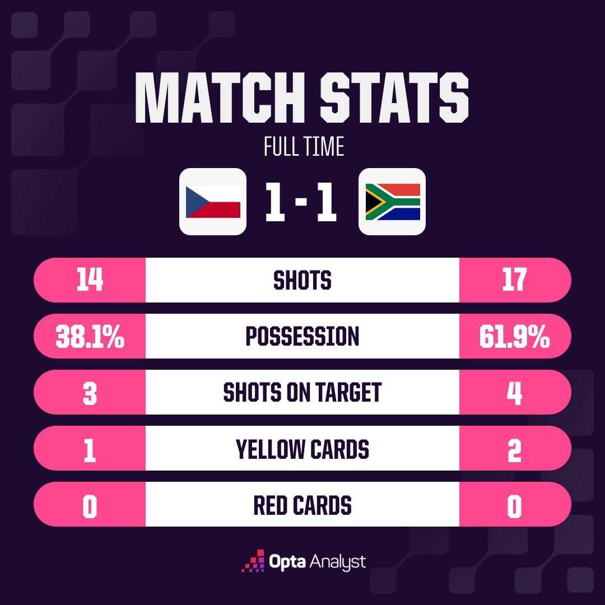
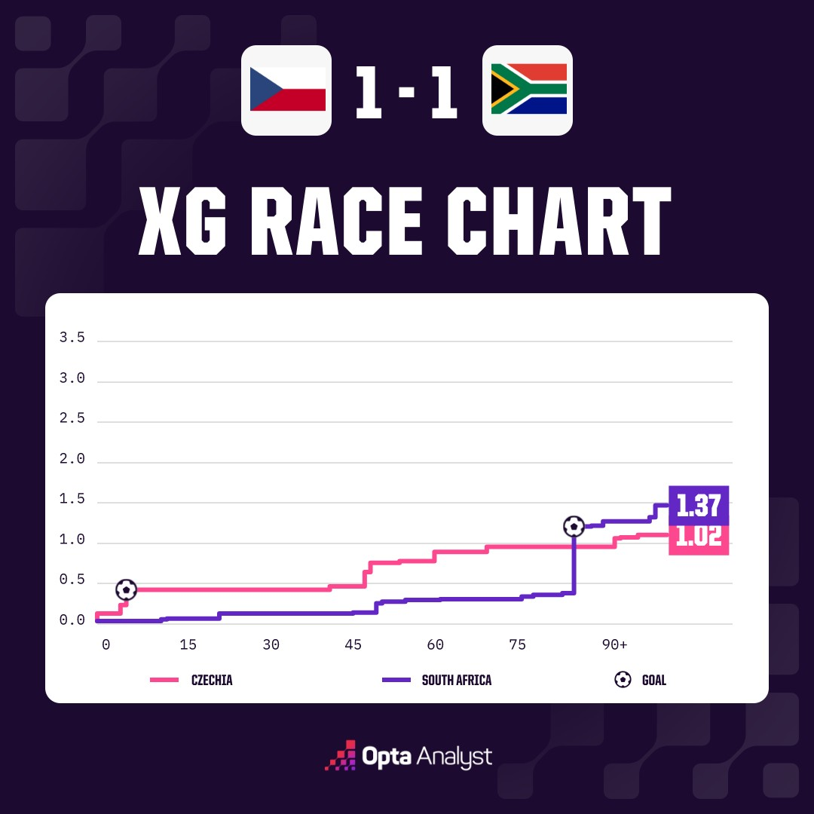
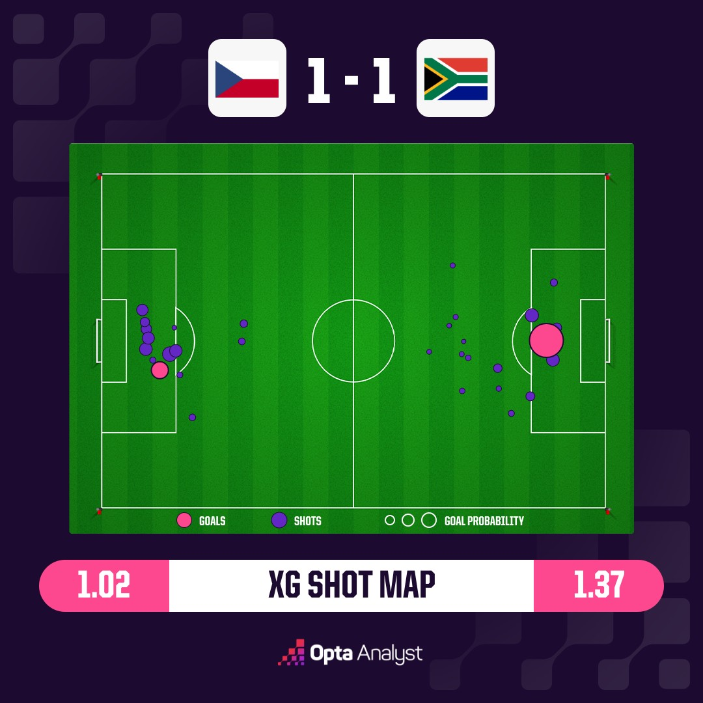
90+8'
That's it! The referee blows the whistle and we have reached full-time. The final score at Atlanta Stadium is Czechia 1-1 South Africa.
90+7'
BLOCKED! That was close. Mbekezeli Mbokazi got off a shot, which was heading in, but Tomás Souček was on hand to make a vital intervention. Great block!
90+7'
CORNER! The pressure is building for South Africa as they win a set-piece after Aubrey Modiba's attempt is blocked by David Zima and diverted out of play.
90+6'
SHOT! Evidence Makgopa manages to get a shot off from inside the area, but although it was heading in, they cannot get enough on it to beat Matej Kovář, who makes the save.
90+4'
No luck! Lukás Provod takes on a shot that, had they got it right, might have been set to test the goalkeeper, but instead it is sent off target and South Africa come away unscathed.
90+1'
Offside! Tomás Souček thought they were through on goal, but the South Africa defence stepped up in time to catch them offside, and the assistant referee puts their flag up.
90+1'
No luck! Jaroslav Zelený takes on a shot that, had they got it right, might have been set to test the goalkeeper, but instead it is sent off target and South Africa come away unscathed.
90+1'
A free-kick in a dangerous position now for Czechia, after a foul from Kamogelo Sebelebele on Jaroslav Zelený. Can Czechia make South Africa pay for that rashness from Kamogelo Sebelebele?
90+1'
A chance goes begging as Ladislav Krejčí gets off a shot that does not hit the target. They might have done better with that one, but instead it is a goal-kick to South Africa.
89'
Corner! The ball goes behind and now Czechia will aim to deliver a good ball into the penalty area and test that South Africa defence, which has been frustrating them in recent minutes.
88'
Save! A long-range strike from Relebohile Mofokeng was heading in, but Matej Kovář got to it to parry it away from danger.
86'
That might have been going in! A fantastic block from Pavel Šulc, who gets in the way of a goal-bound effort from Thalente Mbatha. Would the goalkeeper have been beaten? We will never know.
84'
The South Africa manager is looking to the substitutes’ bench, bringing on Kamogelo Sebelebele in place of Thapelo Maseko. Will the change make a difference? Let’s find out!
83'
GOAL! We are all square at 1-1 after Teboho Mokoena converts their penalty. Will South Africa go on and win this one from here, or can Czechia go and restore their lead?
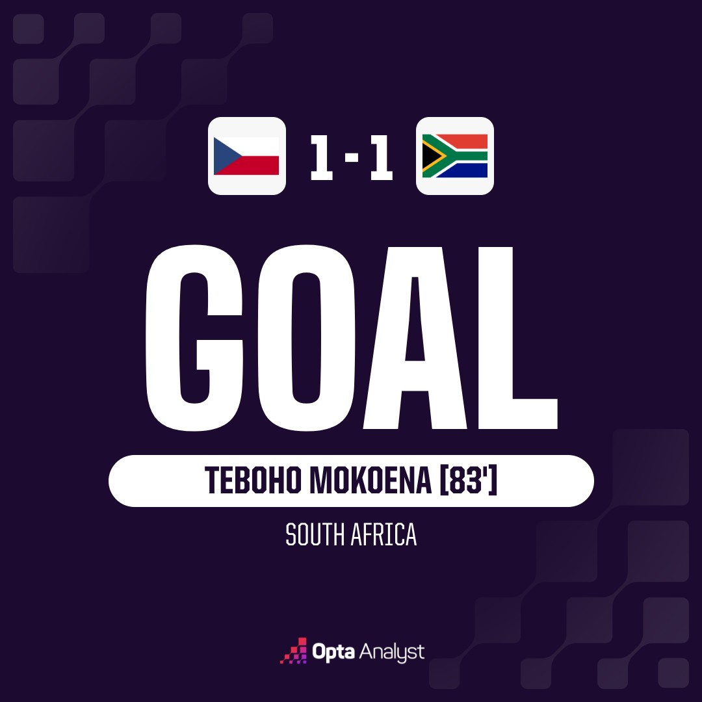
81'
PENALTY ALERT! South Africa has been handed a lifeline by the referee with a penalty decision. Can they capitalize on this chance and convert from the spot?
81'
In the last 15 minutes, it is South Africa who have dominated the ball, having seen 65.09% of the possession, yet they have not been able to go and turn that into a goal just yet, with their opponents standing firm.
78'
A free-kick to South Africa, as Tomás Souček goes in and fouls Teboho Mokoena. However, Czechia will not mind giving one away in this area too much, with plenty of distance to their goal.
78'
Czechia are making a tactical change. Lukás Červ is leaving the field and in their place comes David Zima – we will soon see if this switch has the desired impact.
76'
Great block from Jaroslav Zelený, as they get in the way of an attempt from Mbekezeli Mbokazi that might have been set to cause the goalkeeper some problems. Solid defending from the Czechia player.
76'
With 15 minutes of normal time remaining, it is South Africa who have had more of the ball, with 60.38% compared to Czechia’s 39.62%.
75'
Yellow card! Ladislav Krejčí will have to be careful from now on after they are cautioned.
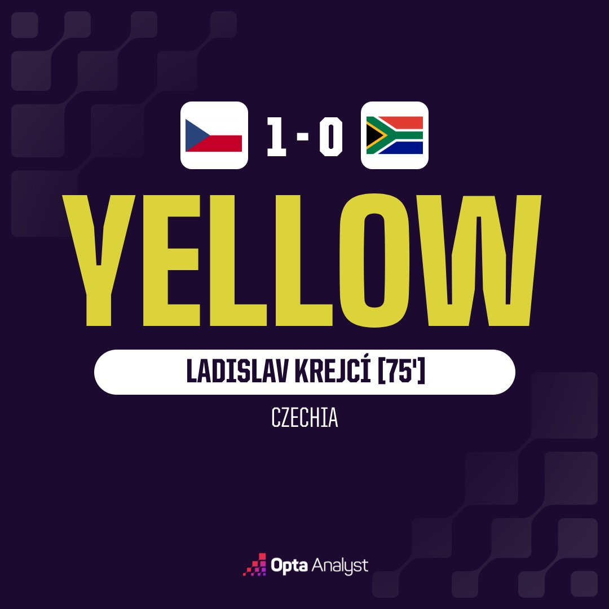
75'
Foul! A free-kick now in a dangerous area for South Africa, after Thapelo Maseko is fouled by Ladislav Krejčí. Can South Africa make the most of this opportunity?
74'
A free-kick to Czechia, as Relebohile Mofokeng goes in and fouls Tomás Souček. However, South Africa will not mind giving one away in this area too much, with plenty of distance to their goal.
74'
CLOSE! Evidence Makgopa gets into a decent shooting position inside the Czechia area, and manages to find space to get an effort off. However, Matej Kovář is equal to it.
68'
BLOCKED! That was close. Ladislav Krejčí got off a shot, which was heading in, but Teboho Mokoena was on hand to make a vital intervention. Great block!
67'
Substitution! Lukás Provod replaces Adam Hložek for Czechia as the manager shuffles the pack. Can Lukás Provod make an impression as this match continues?
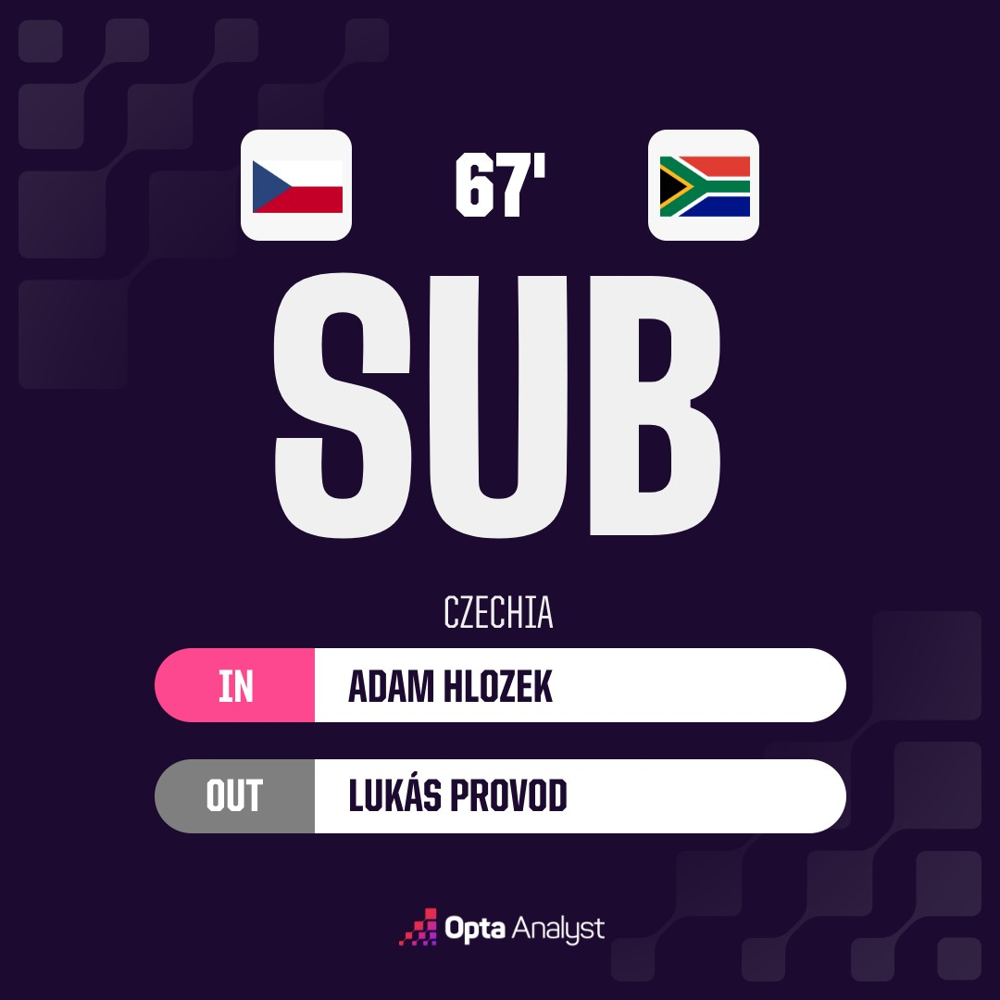
67'
Substitution! Tomás Souček replaces Michal Sadílek for Czechia as the manager shuffles the pack. Can Tomás Souček make an impression as this match continues?
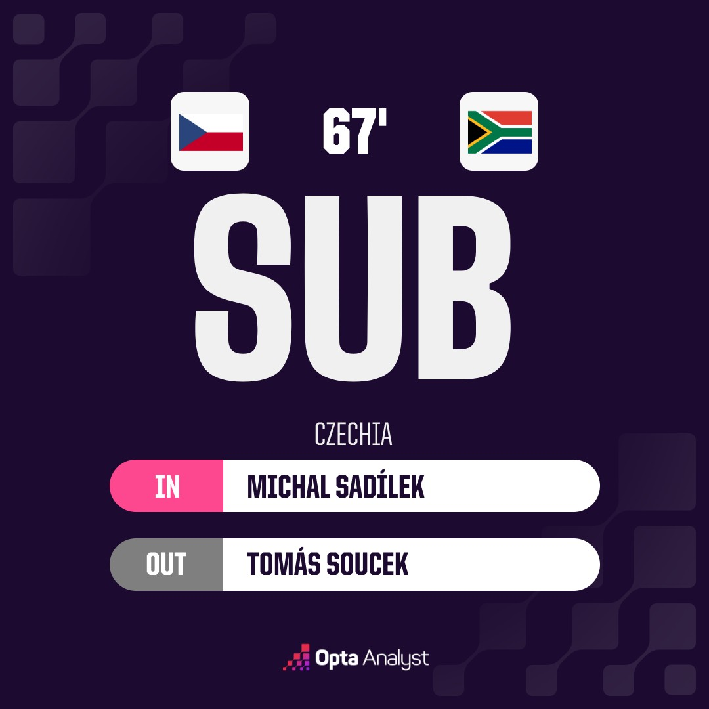
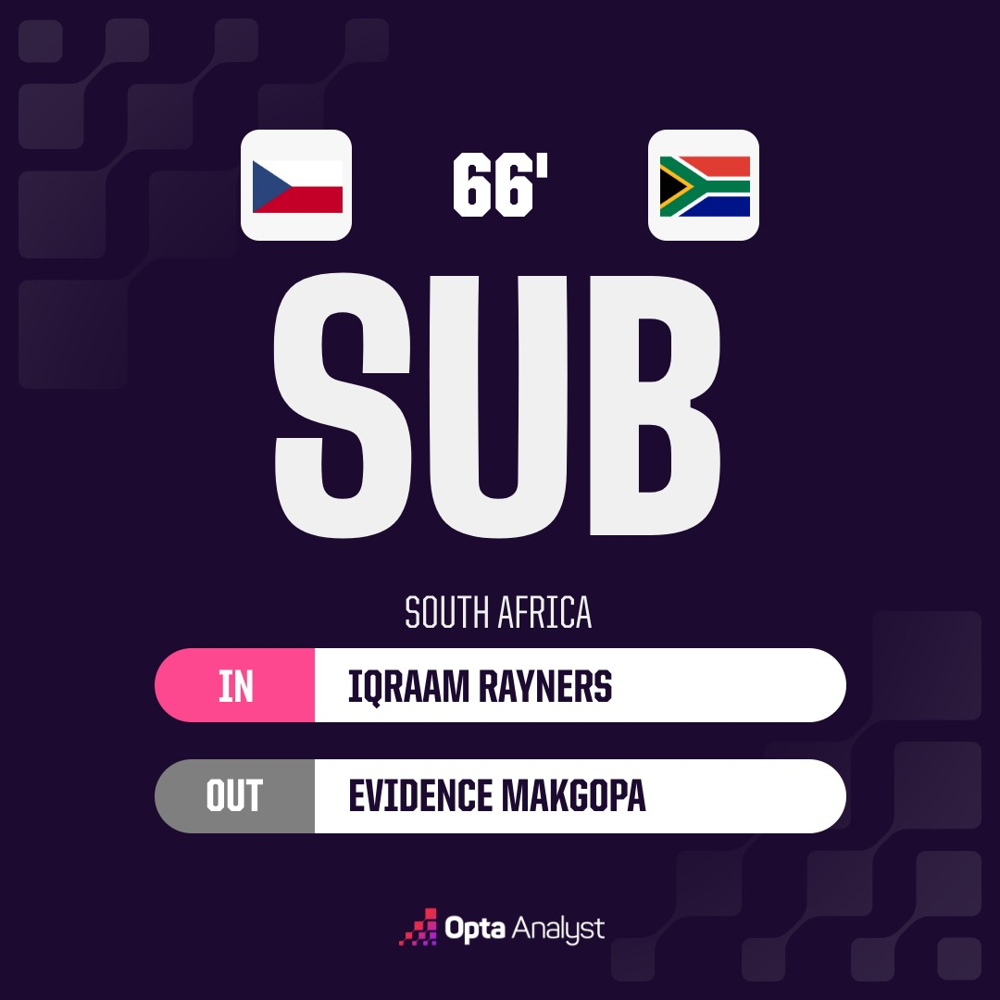
66'
South Africa are making a tactical change. Iqraam Rayners is leaving the field and in their place comes Evidence Makgopa – we will soon see if this switch has the desired impact.
66'
With 25 minutes left to play, it’s a good chance to check in on the shot count. South Africa have mustered 8 so far, with 0 of those landing on target. On the other hand, Czechia have gotten 10 of their 3 of attempts on target.
64'
Adam Hložek goes in on Khuliso Mudau and concedes a foul. The free-kick is not in a particularly dangerous area from Czechia’s viewpoint, though.
62'
That’s offside! A switched-on defensive line from Czechia, as they step up at the right time to catch Khuliso Mudau offside, and the assistant referee’s flag is up.
61'
Plenty of the ball in the last quarter-of-an-hour of this match for South Africa, but still Czechia stand firm, despite having had only 34.38% of the ball in that period. Can South Africa make their possessional dominance count?
60'
MISS! A shot from Aubrey Modiba ends up being off target. They might have done a bit better with that one, but it remains South Africa 0-1 Czechia.
59'
BLOCKED! That was close. Michal Sadílek got off a shot, which was heading in, but Thalente Mbatha was on hand to make a vital intervention. Great block!
58'
Relebohile Mofokeng goes in on Lukás Červ and concedes a foul. The free-kick is not in a particularly dangerous area from South Africa’s viewpoint, though.
57'
Thapelo Maseko goes in on Ladislav Krejčí and concedes a foul. The free-kick is not in a particularly dangerous area from South Africa’s viewpoint, though.
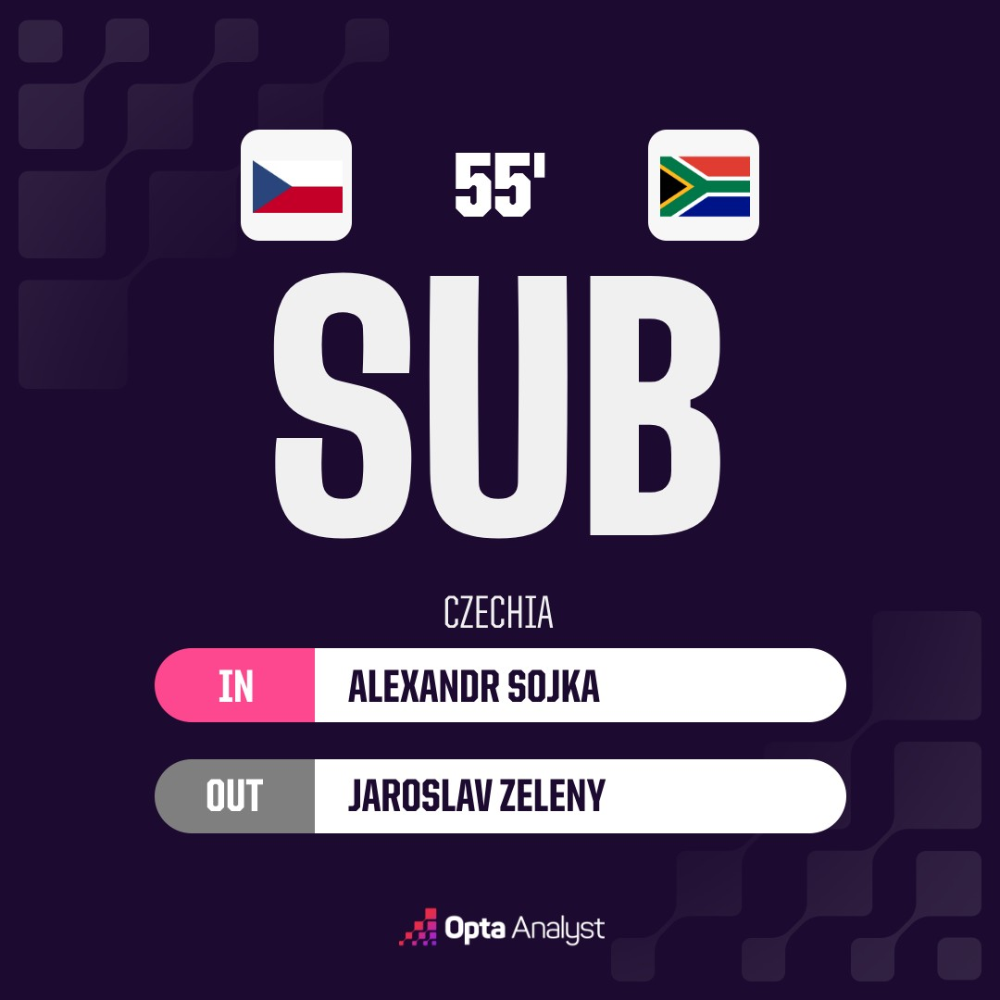
55'
Substitution! Jaroslav Zelený replaces Alexandr Sojka for Czechia as the manager shuffles the pack. Can Jaroslav Zelený make an impression as this match continues?
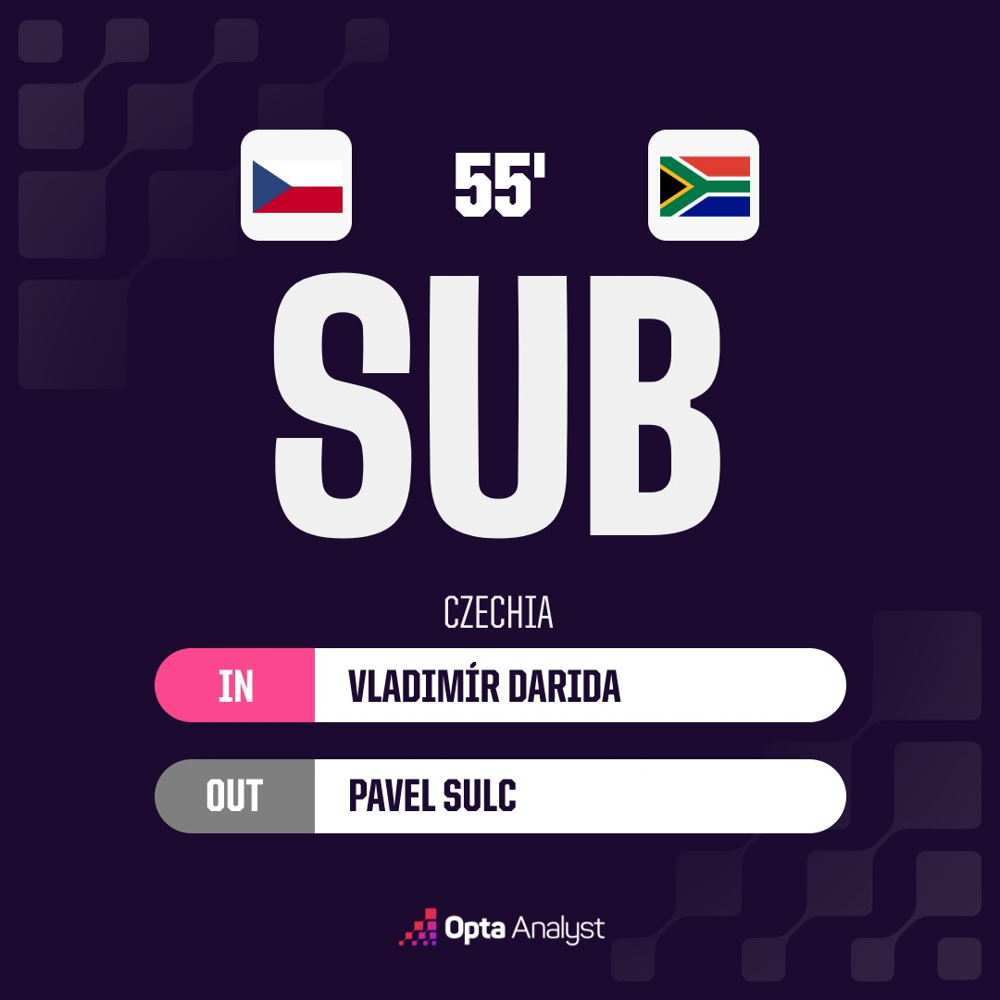
55'
Vladimír Darida’s match is over as Czechia decide to make a substitution. Pavel Šulc enters the field in what looks like a tactical change.
54'
That is a disappointing effort from Thapelo Maseko, who went for glory but got their attempt wrong, and the shot sailed off target. A frustrating moment for South Africa.
53'
MISS! A shot from Ladislav Krejčí ends up being off target. They might have done a bit better with that one, but it remains Czechia 1-0 South Africa.
52'
Great defending from Czechia, who are staying organised and winning key battles to preserve their lead.
50'
A foul from Khuliso Mudau on Michal Sadílek sees Czechia win a free-kick, but it is not in a dangerous position, so South Africa should be confident they can defend it easily enough.
50'
MISS! The score remains 0-1, with Czechia relieved after South Africa’s Mbekezeli Mbokazi goes for goal but sends their attempt off target. Not one to write home about, that one.
48'
What a chance! That should really have been another goal for Czechia, who would have extended their lead had Patrik Schick kept their composure, but instead South Africa survive that opportunity. Can they make their luck count?
47'
South Africa have a corner to defend now after Ronwen Williams diverts an attempt from Lukás Červ out of play. Can Czechia take this chance to get a good delivery in and really test their opponent’s defence?
47'
BLOCK! An intervention from Ime Okon might have just prevented a goal, with the defending player getting in the way of an attempt from Vladimír Darida. Solid defending there!
46'
A foul from Teboho Mokoena on Lukás Červ sees Czechia win a free-kick, but it is not in a dangerous position, so South Africa should be confident they can defend it easily enough.
46'
The South Africa manager is looking to the substitutes’ bench, bringing on Relebohile Mofokeng in place of Jayden Adams. Will the change make a difference? Let’s find out!
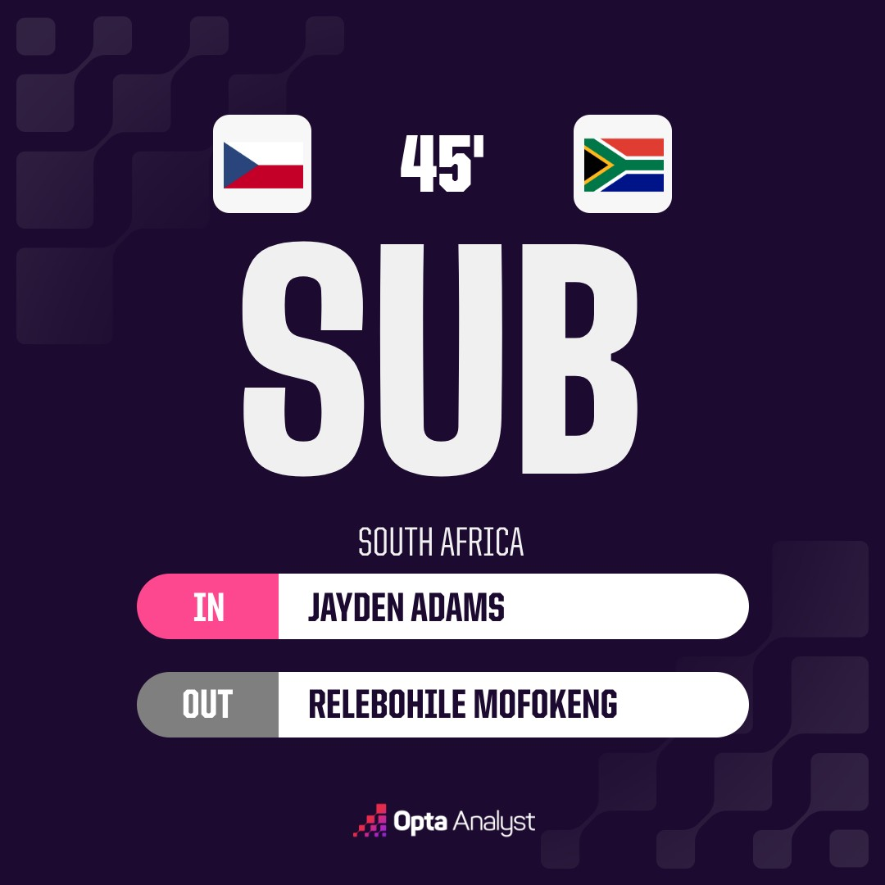
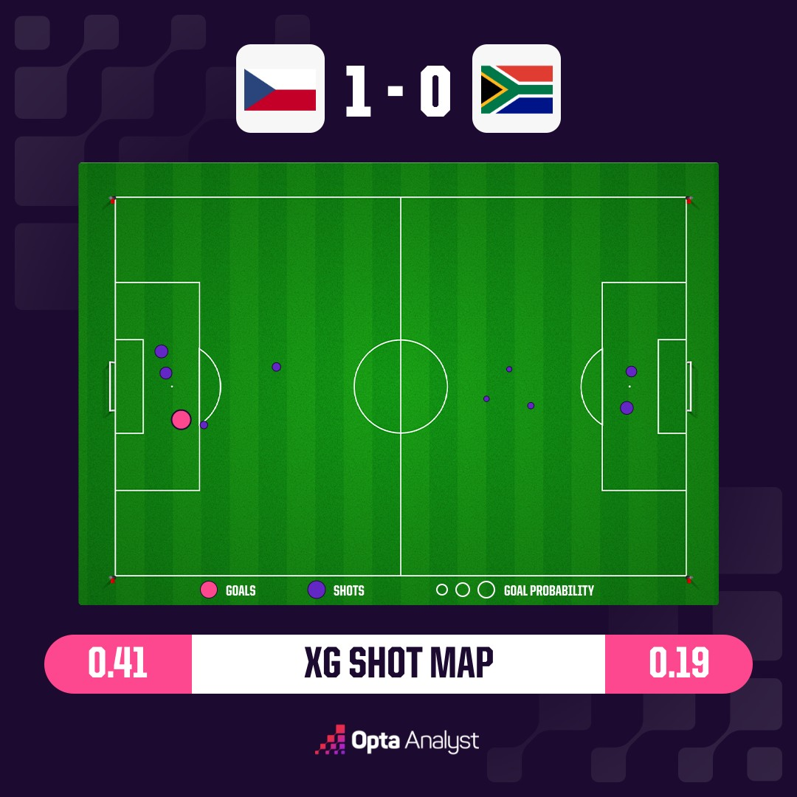
45+5'
Half-time! We reach the interval at Atlanta Stadium and it is Czechia who have a 1-0 lead over South Africa. Can they hold on and see this out in the second half?
45+4'
Great block from Ladislav Krejčí, as they get in the way of an attempt from Thapelo Maseko that might have been set to cause the goalkeeper some problems. Solid defending from the Czechia player.
45+4'
Despite trailing, South Africa are showing real defensive grit, digging in and stopping further damage as they try to build a platform.
45+2'
A free-kick to South Africa, as Lukás Červ goes in and fouls Teboho Mokoena. However, Czechia will not mind giving one away in this area too much, with plenty of distance to their goal.
45+1'
There is plenty of possession for South Africa, with 69.13% compared to Czechia 30.87% in the last 15 minutes. However, South Africa have not been able to turn that dominance of the ball into a goal.
45+1'
A chance goes begging as Teboho Mokoena gets off a shot that does not hit the target. They might have done better with that one, but instead it is a goal-kick to Czechia.
44'
Can Czechia survive here? They will have some defending to do after the ball is turned behind for a corner kick. Will South Africa take this opportunity and grab the goal they have been pushing for?
42'
The Czechia defence steps up in time and there is a frustration for Iqraam Rayners, who thought they were through until the flag goes up to signal offside.
41'
MISS! A shot from Adam Hložek ends up being off target. They might have done a bit better with that one, but it remains Czechia 1-0 South Africa.
40'
That is a booking for Thalente Mbatha, who has received their first yellow card. They are not happy with the decision, but it is done now, and they will have to be careful for the rest of this game.
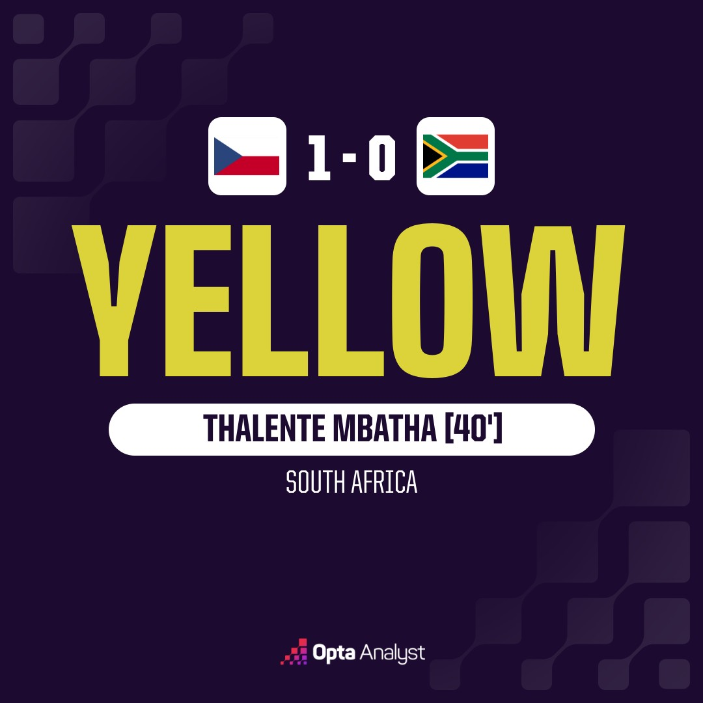
40'
This could be a chance for Czechia, after Thalente Mbatha fouls Patrik Schick, handing them a free-kick in a threatening area. A good set-piece from here could really test the South Africa defense!
38'
In the last 15 minutes, it is South Africa who have dominated the ball, having seen 66.67% of the possession, yet they have not been able to go and turn that into a single shot, so there is no imminent sign of a goal.
37'
It is a corner now to South Africa, with Czechia somewhat hanging on here as they look to hold out for a positive result. Can South Africa make something of this set-piece opportunity?
36'
No luck – it’s offside! Iqraam Rayners looked to dart in behind and get on the end of a pass, yet they just went too early, and the flag is up to signal offside.
34'
Lukás Červ goes in on Aubrey Modiba and concedes a foul. The free-kick is not in a particularly dangerous area from Czechia’s viewpoint, though.
33'
The referee goes to their pocket and pulls out a yellow card, which is brandished in the direction of Teboho Mokoena. Will they be able to avoid a second booking?
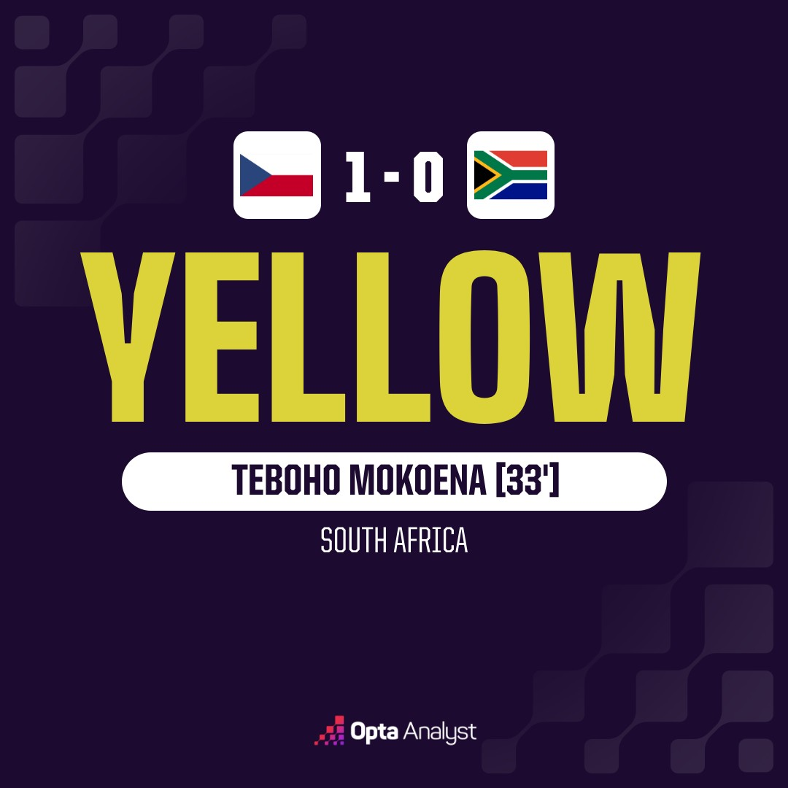
32'
Great defending from Czechia, who are staying organised and winning key battles to preserve their lead.
32'
Not much goalmouth action to speak of in this period of the game, with no attempts made from either side. This game could spark at any moment, however. It is South Africa who have had more of the ball, controlling 69 per cent possession in the last 10 minutes.
32'
A rash challenge from Tomás Holeš, who sends Oswin Appollis tumbling, giving South Africa a free-kick. It is not in a threatening position, but it gives them a chance to get back on the ball.
30'
A rash challenge from Robin Hranáč, who sends Iqraam Rayners tumbling, giving South Africa a free-kick. It is not in a threatening position, but it gives them a chance to get back on the ball.
29'
South Africa have had plenty of the ball in the last 15 minutes, with 65.08% possession compared to just 34.92% for their opponents. However, there’s not been any goal to come from that possessional dominance just yet.
29'
Adam Hložek goes in on Teboho Mokoena and concedes a foul. The free-kick is not in a particularly dangerous area from Czechia’s viewpoint, though.
22'
Great block from Robin Hranáč, as they get in the way of an attempt from Iqraam Rayners that might have been set to cause the goalkeeper some problems. Solid defending from the Czechia player.
20'
A free-kick to South Africa, as Ladislav Krejčí goes in and fouls Thapelo Maseko. However, Czechia will not mind giving one away in this area too much, with plenty of distance to their goal.
17'
A foul from Aubrey Modiba on Patrik Schick sees Czechia win a free-kick, but it is not in a dangerous position, so South Africa should be confident they can defend it easily enough.
15'
A free-kick to South Africa, as Ladislav Krejčí goes in and fouls Thapelo Maseko. However, Czechia will not mind giving one away in this area too much, with plenty of distance to their goal.
14'
South Africa may be behind, but they’re battling hard defensively to stop the gap from widening. A gritty response at the back.
13'
A chance goes begging as Aubrey Modiba gets off a shot that does not hit the target. They might have done better with that one, but instead it is a goal-kick to Czechia.
12'
Oswin Appollis's effort is deflected out for a corner. Can South Africa make anything of this set-piece?
11'
Strong early signals from Czechia at the back — calm and commanding as they break up attacks with ease.
9'
The South Africa defence steps up in time and there is a frustration for Vladimír Coufal, who thought they were through until the flag goes up to signal offside.
8'
A free-kick to Czechia, as Thapelo Maseko goes in and fouls Alexandr Sojka. However, South Africa will not mind giving one away in this area too much, with plenty of distance to their goal.
6'
GOAL! 1-0! Michal Sadílek scores for Czechia and what a start to the match that is! Michal Sadílek applies the decisive touch from inside the box to put Czechia in a strong early position and leave South Africa with plenty of work to do.
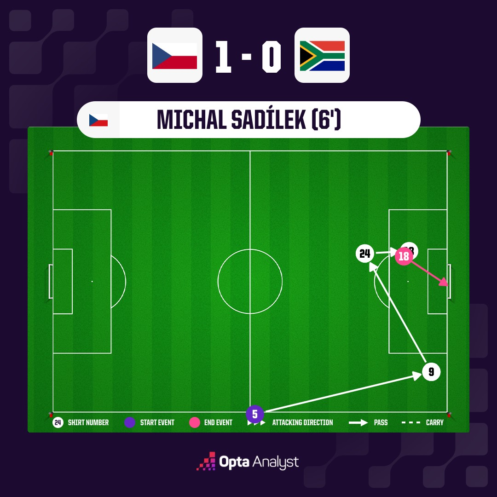
5'
No luck! Michal Sadílek takes on a shot that, had they got it right, might have been set to test the goalkeeper, but instead it is sent off target and South Africa come away unscathed.
5'
MISS! The score remains 0-0, with South Africa relieved after Czechia’s Ladislav Krejčí goes for goal but sends their attempt off target. Not one to write home about, that one.
4'
Good play from Vladimír Darida, who draws a foul from Teboho Mokoena to hand Czechia a free-kick in a dangerous position. Will they create something from this set-piece?
1'
What a miss! That was a huge chance for Patrik Schick, but they have failed to convert. What an opportunity that was for Czechia.
1'
KICK-OFF! And here we go! We are up and running in this clash between Czechia and South Africa at Atlanta Stadium. Stay tuned for all the action as it happens!
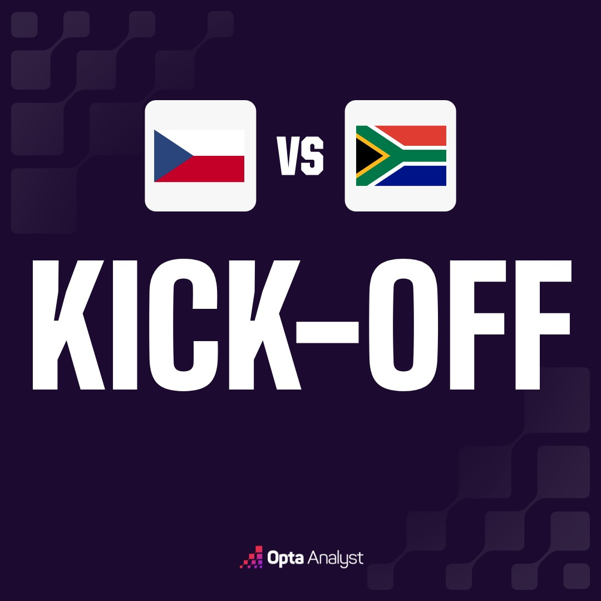
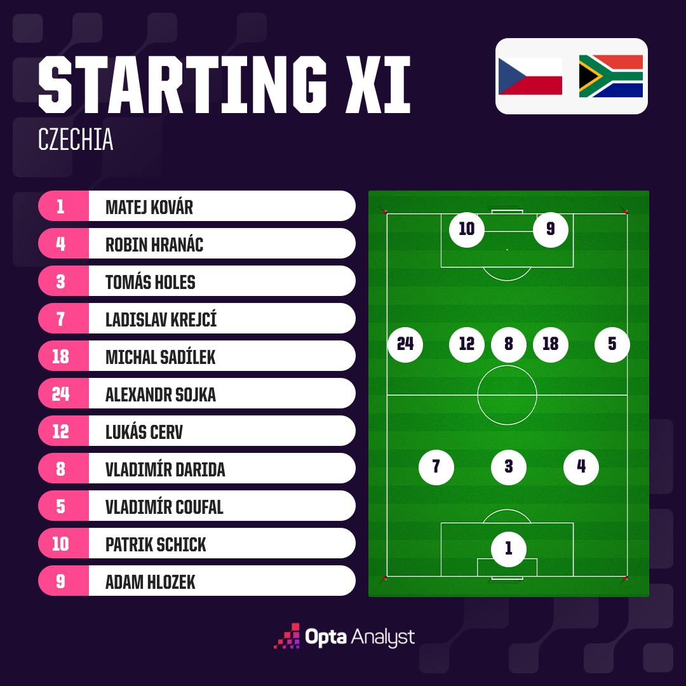
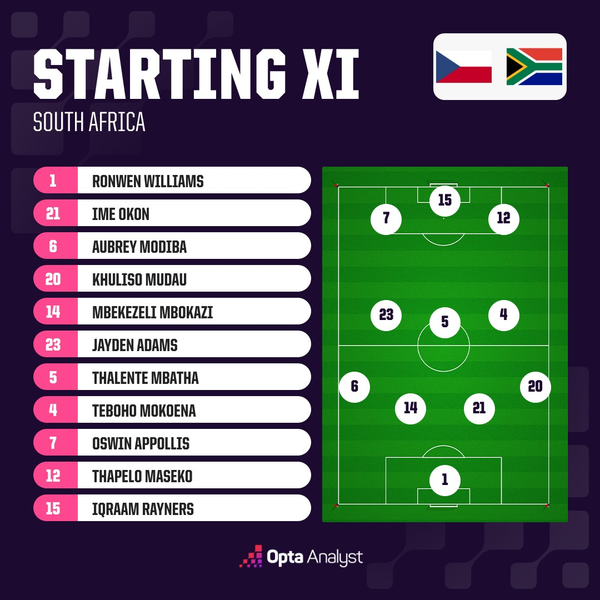
L. Krejčí has scored in the last 2 home games for Czechia
Two teams looking for their first win in the FIFA World Cup group stage will clash at Atlanta Stadium on Thursday, as Czechia take on South Africa.
Czechia suffered a 2-1 defeat in their opening World Cup group stage match against Korea Republic on June 11. Ladislav Krejcí was the only player on the scoresheet in the loss. In five games this year, they have four wins and one loss.
South Africa slumped 2-0 against Mexico in their opening World Cup group stage game, a June 11 clash at Mexico City Stadium. In 2026, they have won one, drawn two, and lost three.
Czechia and South Africa are third and fourth in the group, respectively, level on zero points. Mexico are sitting atop the group on three points. Korea Republic are second, also on three points.
The clubs played out a 2-2 draw in their previous meeting in December 1997.
Krejcí leads Czechia in World Cup scoring after netting against Korea Republic. South Africa are still looking for their first goal of this World Cup campaign.
Czechia have scored in each of their last eight matches in all competitions. They have been on the scoresheet ever since a World Cup Qualifiers meeting with Croatia in October 2025.
In their last six matches in all competitions, Czechia have won three, drawn two and lost one. The Czechia side scored 16 and conceded eight over that stretch, scoring first in five of the six contests. A majority of their goals (10) came in the first half, while their opponents netted three times in the first 45 minutes. The South African side have won one, drawn two and lost three in their last six. The South African side scored four and conceded seven over that stretch, failing to score first in any of the six. All of their goals came after halftime, while their opponents netted three times before the break.
L. Krejčí has scored in the last 3 games for Czechia
-
General
Possession 38.3% 38.25761.74361.7% Possession lost in defensive half 29 293333 Possession lost in middle third 53 533939 Duels 93 939696 Duels success rate 48.4% 48.38748.95849.0% Aerial duels 22 222222 Aerial duels won 59.1% 59.09140.90940.9% Successful dribbles 10 1088 Fouls won 10 101212 Offsides 2 233 Corner awarded 5 555 -
Distribution
Passes 341 341563563 Long passes 45 455858 Long passes proportion (%) 13.2% 13.19610.30210.3% Passing accuracy 79.8% 79.76590.23190.2% Passes in opponents' half 143 143285285 Passing accuracy in opponents' half (%) 69.2% 69.23183.15883.2% Total passes in the final third 67 67132132 Passing accuracy in final third (%) 59.7% 59.70176.51576.5% Forward passes 226 226319319 Forward passes (%) 66.3% 66.27656.66156.7% Through balls 0 044 Final third entries 39 395959 Penalty area entries 25 252323 Total open play crosses 8 81717 Crosses 16 161717 Crossing accuracy 43.8% 43.7523.52923.5% -
Attack
Goals 1 111 Shots 14 141717 Shots on target 3 344 Blocked shots 3 388 Headed shots 7 722 Shots outside the box 3 31111 Shots inside the box 11 1166 Shots accuracy excluding blocked shots 27.3% 27.27344.44444.4% Shooting accuracy 21.4% 21.42923.52923.5% Key Passes 11 111111 -
Defence
Tackles 12 122020 Tackles success rate 33.3% 33.3335555.0% Clearances 22 222424 Interceptions 9 999 Recoveries 46 464545 Attacking third recovery 2 222 Defensive third recovery 26 262121 Midfield third recovery 18 182222 Recoveries in attacking half (%) 4.3% 4.3484.4444.4% -
Discipline
Fouls conceded 12 121010 Yellow cards 1 122 Red cards 0 000